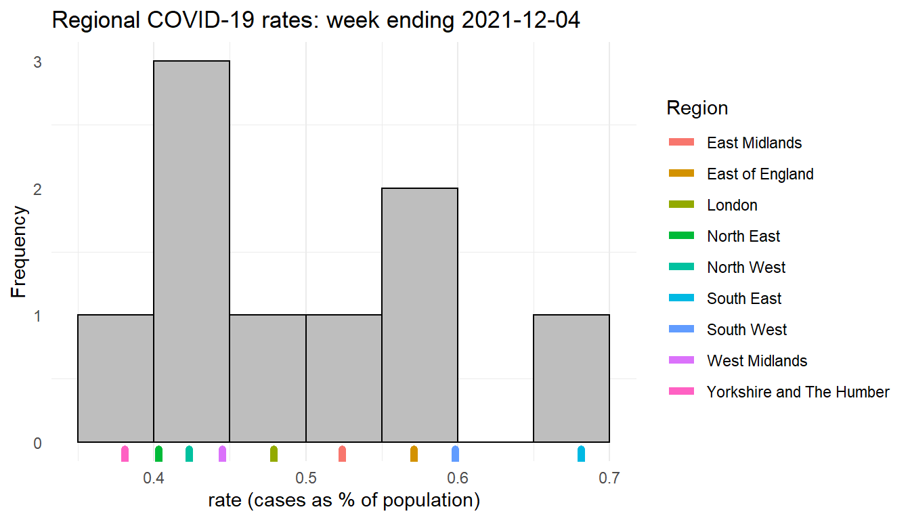

Code
download.file("https://github.com/profrichharris/profrichharris.github.io/raw/main/MandM/data/covid_extract.csv", "covid.csv", mode = "wb", quiet = TRUE) 
If base R is R Classic then tidyverse is a new flavour of R, designed for data science. It consists of a collection of R packages that “share an underlying design philosophy, grammar, and data structures”.
Tidyverse is easier to demonstrate then to pin-down to some basics so let’s work through an example using both base R and tidyverse to illustrate some differences.
We will begin by downloading a data file to use. It is an extract of the Covid Data Dashboard for England in December 2021. Some prior manipulation and adjustments to these data have been undertaken for another project so treat them as indicative only (the actual numbers may have been changed slightly from their originals although only marginally so).
download.file("https://github.com/profrichharris/profrichharris.github.io/raw/main/MandM/data/covid_extract.csv", "covid.csv", mode = "wb", quiet = TRUE) We also need to require(tidyverse) ready for use.
require(tidyverse)
If you get a warning message saying there is no package called tidyverse then you need to install it: install.packages("tidyverse", dependencies = TRUE).
Let’s read-in and take a look at the data. First in base R.
df1 <- read.csv("covid.csv")
head(df1) MSOA11CD regionName X2021.12.04 X2021.12.11 X2021.12.18 X2021.12.25 All.Ages
1 E02000002 London 25 48 148 176 7726
2 E02000003 London 46 58 165 215 11246
3 E02000004 London 24 44 100 141 6646
4 E02000005 London 58 97 185 231 10540
5 E02000007 London 38 94 153 205 10076
6 E02000008 London 54 101 232 245 12777Now using tidyverse,
df2 <- read_csv("covid.csv")
print(df2, n = 6)# A tibble: 6,789 × 7
MSOA11CD regionName `2021-12-04` `2021-12-11` `2021-12-18` `2021-12-25`
<chr> <chr> <dbl> <dbl> <dbl> <dbl>
1 E02000002 London 25 48 148 176
2 E02000003 London 46 58 165 215
3 E02000004 London 24 44 100 141
4 E02000005 London 58 97 185 231
5 E02000007 London 38 94 153 205
6 E02000008 London 54 101 232 245
# … with 6,783 more rows, and 1 more variable: `All Ages` <dbl>There are already some differences. First, tidyverse has, in this case, handled the names of the variables better. It has also created what is described as a tibble which is “a modern reimagining of the data.frame, keeping what time has proven to be effective, and throwing out what is not.” You can find out more about them and how they differ from traditional data frames here.
We will now select the regionName, 2021-12-04 and All Ages variables, rename the second of these as cases and the third as population, and look at the data again to check that it has worked.
In base R,
df1 <- df1[, c("regionName", "X2021.12.04", "All.Ages")]
names(df1)[2:3] <- c("cases", "population")
head(df1) regionName cases population
1 London 25 7726
2 London 46 11246
3 London 24 6646
4 London 58 10540
5 London 38 10076
6 London 54 12777In tidyverse,
df2 <- select(df2, regionName, `2021-12-04`, `All Ages`)
df2 <- rename(df2, cases = `2021-12-04`, population = `All Ages`)
print(df2, n = 6)# A tibble: 6,789 × 3
regionName cases population
<chr> <dbl> <dbl>
1 London 25 7726
2 London 46 11246
3 London 24 6646
4 London 58 10540
5 London 38 10076
6 London 54 12777
# … with 6,783 more rowsComparing the two, the tidyverse code may be more intuitive to understand because of its use of verbs as functions: select(), rename() and so forth.
Now we shall bring the two previous stages together, using what is referred to as a pipe. Without worrying about the detail, which will be returned to presently, here is an example of a pipe, |>, being used in base R:
read.csv("covid.csv") |>
(\(x) x[, c("regionName", "X2021.12.04", "All.Ages")])() -> df1
names(df1)[2:3] <- c("cases", "population")
df1 |>
head() regionName cases population
1 London 25 7726
2 London 46 11246
3 London 24 6646
4 London 58 10540
5 London 38 10076
6 London 54 12777
The above will only work if you are using R version 4.1.0 or above. You can check which version you are running by using R.Version()$version.
Now using tidyverse and a different pipe, %>%,
read_csv("covid.csv") %>%
select(regionName, `2021-12-04`, `All Ages`) %>%
rename(cases = `2021-12-04`, population = `All Ages`) %>%
print(n = 6)# A tibble: 6,789 × 3
regionName cases population
<chr> <dbl> <dbl>
1 London 25 7726
2 London 46 11246
3 London 24 6646
4 London 58 10540
5 London 38 10076
6 London 54 12777
# … with 6,783 more rowsThe obvious difference here is that the tidyverse code is more elegant. But what is the pipe and what is the difference between |> in the base R code and %>% in the tidyverse example?
A pipe is really just a way of sending (’piping`) something from one line of code to the next, to create a chain of commands (forgive the mixed metaphors). For example,
x <- 0:10
mean(x)[1] 5Could be calculated as
0:10 |>
mean()[1] 5or as
0:10 %>%
mean[1] 5A more complicated example is below. It employs the function sapply(), a variant of the function lapply(X, FUN) that takes a list X and applies the function FUN to each part of it. In the example, it is the function mean.
x <- list(0:10, 10:20) # Creates a list with two parts: the numbers 0 to 10, and 10 to 20
y <- sapply(x, mean) # Calculates the mean for each part of the list, which are 5 and 15
sum(y) # Sums together the two means, giving 20[1] 20The above could instead be written as
list(0:10, 10:20) |>
sapply(mean) |>
sum()[1] 20or as
list(0:10, 10:20) %>%
sapply(mean) %>%
sum[1] 20All three arrive at the same answer, which is 20.
So far, so good but what is the difference between |> and %>%? The answer is that %>% was developed before |> in the magrittr package, whereas |> is R’s new native pipe. They are often interchangeable but not always.
At the moment, the |> pipe is less flexible to use than %>%. Consider the following example. The final two lines of code work fine using %>% to pipe the data frame into the regression model (the function lm() fits a linear model).
x <- 1:100
y <- 2*x + rnorm(100) # Adds some random noise to the relationship between y and x
data.frame(x, y) %>%
lm(y ~ x, data = .)
Call:
lm(formula = y ~ x, data = .)
Coefficients:
(Intercept) x
-0.07873 2.00052 However, it does not work with the pipe, |> because it does not recognise the place holder ., which receives the data frame from the line above and contains the variables for the model.
# The following code does not work
x <- 1:100
y <- 2*x + rnorm(100)
data.frame(x, y) |>
lm(y ~ x, data = .)To solve the problem, the above code can be modified by wrapping the regression part in another function but the end result is rather ‘clunky’.
x <- 1:100
y <- 2*x + rnorm(100)
data.frame(x, y) |>
(\(z) lm(y ~ x, data = z))()
Call:
lm(formula = y ~ x, data = z)
Coefficients:
(Intercept) x
0.2966 1.9928 Over time, expect |> to be developed and to supersede %>%. For now, however, you are unlikely to encounter errors using %>% as a substitute for |> but you might using |> instead of %>%. In other words, %>% is the safer choice and the one which will be used for these tutorials.
After that digression into piping, let’s return to our example that is comparing base R and tidyverse to read-in a table of data, select variables and rename one, and, in the following, to calculate the number of COVID-19 cases per English region as a percentage of their estimated populations in the week ending 2021-12-04.
First, in base R:
df1 <- read.csv("covid.csv")
df1 <- df1[, c("regionName", "X2021.12.04", "All.Ages")]
names(df1)[c(2,3)] <- c("cases", "population")
cases <- tapply(df1$cases, df1$regionName, sum) # Total cases per region
cases # This step isn't necessary but is included to show the result of the line above East Midlands East of England London
25472 35785 43060
North East North West South East
10796 31185 62807
South West West Midlands Yorkshire and The Humber
33846 26554 21079 population <- tapply(df1$population, df1$regionName, sum) # Total population per region
rate <- round(cases / population * 100, 3)
rate East Midlands East of England London
0.524 0.571 0.479
North East North West South East
0.403 0.423 0.681
South West West Midlands Yorkshire and The Humber
0.598 0.445 0.381 Now using tidyverse,
read_csv("covid.csv") %>%
select(regionName, `2021-12-04`, `All Ages`) %>%
rename(cases = `2021-12-04`, population = `All Ages`) %>%
group_by(regionName) %>%
summarise(across(where(is.numeric), sum)) %>%
mutate(rate = round(cases / population * 100, 3)) %>%
print(n = Inf)# A tibble: 9 × 4
regionName cases population rate
<chr> <dbl> <dbl> <dbl>
1 East Midlands 25472 4865583 0.524
2 East of England 35785 6269161 0.571
3 London 43060 8991550 0.479
4 North East 10796 2680763 0.403
5 North West 31185 7367456 0.423
6 South East 62807 9217265 0.681
7 South West 33846 5656917 0.598
8 West Midlands 26554 5961929 0.445
9 Yorkshire and The Humber 21079 5526350 0.381Either way produces the same answers but, again, there is an elegance and consistency to the tidyverse way of doing it that is missing from base R.
As a final step for the comparison, we will extend the code to visualise the regional COVID-19 rates in a histogram, with a rug plot included. A rug plot is a way of preserving the individual data values that would otherwise be ‘lost’ within the bins of a histogram.
As previously, we begin with base R,
df1 <- read.csv("covid.csv")
df1 <- df1[, c("regionName", "X2021.12.04", "All.Ages")]
names(df1)[c(2,3)] <- c("cases", "population")
cases <- tapply(df1$cases, df1$regionName, sum)
population <- tapply(df1$population, df1$regionName, sum)
rate <- round(cases / population * 100, 3)
hist(rate, xlab = "rate (cases as % of population)",
main = "Regional COVID-19 rates: week ending 2021-12-04")
rug(rate, lwd = 2)
…and continue with tidyverse, creating the output in such a way that it mimics the previous plot.
require(ggplot2)
read_csv("covid.csv") %>%
select(regionName, `2021-12-04`, `All Ages`) %>%
rename(cases = `2021-12-04`, population = `All Ages`) %>%
group_by(regionName) %>%
summarise(across(where(is.numeric), sum)) %>%
mutate(rate = round(cases / population * 100, 3)) ->
df2
df2 %>%
ggplot(aes(x = rate)) +
geom_histogram(colour = "black", fill = "grey", binwidth = 0.05, center = -0.025) +
geom_rug(size = 2) +
labs(x = "rate (cases as % of population)", y = "Frequency",
title = "Regional COVID-19 rates: week ending 2021-12-04") +
theme_minimal() +
theme(panel.grid.major.y = element_blank())
In this instance, it is the tidyverse code that is the more elaborate. This is partly because there is more customisation of it to mimic the previous plot, which has added the final two lines of code. However, it is also because it is using the package ggplot2 to produce the histogram. We return to ggplot2 more in later sessions. For now it is sufficient to scan the code and observe how it is ‘layering up’ the various components of the graphic, which those components separated by the + in the lines of code.
I prefer the ggplot2 to the hist() graphics plot but that may be a matter of personal taste. However, ggplot2 can do ‘clever things’ with the visualisation, a hint of which is shown below.
require(ggplot2)
df2 %>%
ggplot(aes(x = rate)) +
geom_histogram(colour = "black", fill = "grey", binwidth = 0.05, center = -0.025) +
geom_rug(aes(colour = regionName), size = 2) +
labs(x = "rate (cases as % of population)", y = "Frequency",
title = "Regional COVID-19 rates: week ending 2021-12-04") +
scale_colour_discrete(name = "Region") +
theme_minimal() +
theme(panel.grid.major.y = element_blank()) 
Please don’t form that impression that ggplot2 is hard-wired to tidverse, and base R to the base graphics. In practice, they are interchangeable.
Here is an example of using ggplot2 after a sequence of base R commands.
df1 <- read.csv("covid.csv")
df1 <- df1[, c("regionName", "X2021.12.04", "All.Ages")]
names(df1)[c(2,3)] <- c("cases", "population")
df1$rate <- round(df1$cases / df1$population * 100, 3)
ggplot(df1, aes(x = rate, y = regionName)) +
geom_boxplot() +
labs(x = "rate (cases as % of population)",
y = "region",
title = "Regional COVID-19 rates: week ending 2021-12-04") +
theme_minimal()
And here is an example of using the base R graphic boxplot() after a chain of tidyverse commands.
read_csv("covid.csv") %>%
select(regionName, `2021-12-04`, `All Ages`) %>%
rename(cases = `2021-12-04`, population = `All Ages`) %>%
mutate(rate = round(cases / population * 100, 3)) -> df2
par(mai=c(0.8,2,0.5,0.5), bty = "n", pch = 20) # See text below
boxplot(df2$rate ~ df2$regionName, horizontal = TRUE,
whisklty = "solid", staplelty = 0,
col = "white", las = 1, cex = 0.9, cex.axis = 0.75,
xlab = "rate (cases as % of population)", ylab="",
main = "Regional COVID-19 rates: week ending 2021-12-04")
title(ylab = "region", line = 6)
I would argue that, in this instance, the base R graphic is as nice as the ggplot2 one but it took more customisation to get it that way and I had to go digging around in the help files, ?boxplot, ?bxp and ?par to find what I needed, which included changing the graphic’s margins (par(mai=...))), moving and changing the size of the text on the vertical axis (the argument cex.axis and the use of the title() function), changing the appearance of the ‘whiskers’ (whisklty = "solid" and staplelty = 0), and so forth. Still, it does demonstrate that you can have a lot of control over what is produced, if you have the patience and tenacity to do so.
Having provided a very small taste of tidyverse and how it differs from base R, we might be tempted to ask, “which is better?” However, the question is misguided: it is a little like deciding to go to South America and asking whether Spanish or Portuguese is the better language. It depends, of course, on what you intend to do and where you intend to travel.
I use both base R and tidyverse packages in my work, sometimes drifting between the two in rather haphazard ways. If I can get what I want to work then I am happy. Outcomes worry me more than means so, although I use tidyverse a lot, I am not always as tidy as it would want me to be!

There is much more to tidyverse than has been covered here. See here for further information about it and its core packages.
A full introduction to using tidyverse for Data Science is provided by the book R for Data Science by Hadley Wickham and Garrett Grolemund. There is a free online version of it available.